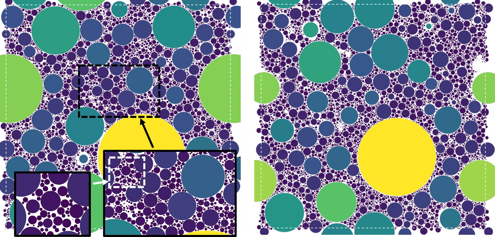

This page is a short overview of the project and its motivation. The full treatment — methodology, extrapolation procedures, and the complete comparison against theory and prior simulation — is given in the paper linked at the bottom.
Real particulate systems are almost never monodisperse. Granular media, powders, sediments, and colloids routinely carry size distributions spanning ratios of tens to thousands, and in each case the packing density largely governs the mechanical and transport properties of the material. Broad polydispersity is therefore physically commonplace — and simultaneously among the hardest regimes to generate numerically.
The Clarke–Wiley inflation protocol, as adapted in earlier work on confined packings and polydisperse packings, generates dense disordered configurations by inflating particles from a dilute starting state while relaxing the resulting overlaps. In the usual implementation every particle coordinate is advanced with a single, global step size. As the ratio of largest to smallest diameter S ≡ Dmax/Dmin increases, that step must shrink: the contact network comes to contain widely separated force and curvature scales, and the minimization becomes increasingly ill-conditioned. The practical consequence is that most numerical work has remained at size ratios of order ten to a hundred.
This project replaces the single global step with the Adam optimizer, which assigns each coordinate
its own adaptive step size derived from recent gradient statistics — without Hessian information or
line searches, and at essentially the per-iteration cost of a conventional force evaluation and
position update. Because coordinates adapt independently, the number of updates needed to reach the
stopping criterion depends only weakly on S. The method is implemented in
rcpgenerator, which accepts an arbitrary prescribed list of particle diameters, a
spatial dimension, and a boundary geometry; each coordinate direction may be periodic or bounded by
a flat or curved hard wall, allowing rectilinear, circular, cylindrical, and spherical domains
within the same formulation.

A planar slice through a three-dimensional packing generated with a truncated power-law size distribution at the Andreasen exponent p ≈ −3.63 and size ratio S = 100 (N ≈ 5.6×105, φ ≈ 0.86), with each cut sphere colored by its three-dimensional diameter. This distribution is the classical optimal grading, in which each size class fills the voids left by the next-larger one. The packing is densely filled across every size class — but the regions of open pore space still visible between the coarse grains are equally part of the result: they mark room for further densification that this protocol does not reach.
The table below lists representative packings drawn from a truncated-lognormal family, where the width parameter α sets the polydispersity and thereby the realized size ratio. It is included to indicate the computational scale the method sustains rather than as a benchmark against other solvers.
| α | S | N | φ | compute time (min) |
|---|---|---|---|---|
| 0.10 | 3 | 2,000 | 0.641 | 0.0 |
| 0.50 | 116 | 2,000 | 0.698 | 0.1 |
| 0.70 | 773 | 8,784 | 0.735 | 0.2 |
| 0.90 | 5,167 | 75,966 | 0.772 | 2.9 |
| 1.00 | 13,360 | 195,929 | 0.788 | 12.8 |
| 1.10 | 34,544 | 413,799 | 0.799 | 35.9 |
| 1.25 | 143,631 | 883,556 | 0.809 | 98.3 |
| 1.30 | 230,960 | 1,049,699 | 0.813 | 124.2 |
Times are for one packing using 14 CPU cores. S is the realized ratio of largest to smallest diameter, N the particle number, and φ the solid-volume packing fraction.
In a controlled single-threaded benchmark spanning N = 5×103 to 1.6×105, the measured generation time scales as t(N) ∝ N1.34, corresponding to roughly a 2.5-fold increase in compute time each time N is doubled. Across the full study the reach extends to size ratios of S ~ 5×105 for the lognormal family and particle numbers up to N ≈ 5.6×106 for the power law, with the densest packings reaching φ ≈ 0.87. In aggregate the work comprises 1166 independent random close packings and more than 3.5×108 packed spheres, 128 of them containing over one million particles.
The generator was run across three continuous distribution families — truncated lognormal, truncated power law, and Weibull — and compared against the parameter-free Farr–Groot prediction and, where available, published molecular-dynamics and discrete-element simulations. In every case the measured packing fractions reproduce the distribution-controlled shape of the prediction, including the locations of peaks and knees and the trends with distribution width and size ratio, while differing systematically in magnitude by roughly 0.005–0.01. Separately, applying the method to mimic a staged multimodal packing protocol reproduces the densities measured in McGeary's vibrated-bed experiments, rising class by class through the grading and remaining slightly below the experimental values at each rung.
Random close packing is protocol-dependent, and the packing fractions reported here are those of one inflation protocol; no claim is made to a protocol-independent or maximally jammed value. The configurations are made strictly non-overlapping, but they are not strictly or collectively jammed. The Farr–Groot comparison serves throughout as a yardstick — it is independent of the generator, but is itself an approximation, so departures are reported as results rather than as verdicts on the theory. Nor is the density obtained here a ceiling: the packings sit slightly below the molecular-dynamics references and, as the figure above shows, leave clearly unfilled voids. Additional routes using Adam or similar per-step adaptive methods may yet reach denser packings at little additional compute cost.
K. Desmond. Random close packing at extreme size ratios with an Adam-based inflation protocol. arXiv:2608.12235 (2026).